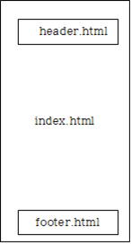

jQuery의 load 메서드를 이용하여 파일 결합의 의미를 실습한다.
jQuery를 사용하여 index.html 에서 header.html 과 footer.html을 import 한다.
반드시 "Open with Live Server"로 실행해야 한다.
왜나하면 ajax 를 이용해야 하기 때문.

jQuery의 load() 메서드를 이용한 파일 결합시의 문제점은 무엇인가?
==> 페이지의 실행 순서와 연관됨